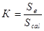
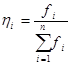
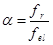

СТРОИТЕЛЬНЫЕ НОРМЫ И ПРАВИЛА
МОСТЫ И ТРУБЫ.
ПРАВИЛА ОБСЛЕДОВАНИЙ
И ИСПЫТАНИЙ
СНиП 3.06.07-86
ГОСУДАРСТВЕННЫЙ СТРОИТЕЛЬНЫЙ КОМИТЕТ СССР
Москва 1987
РАЗРАБОТАНЫ Союздорнии Минтрансстроя (инженеры В.В. Васильев - руководитель темы, П.В. Рутгарс, Е.А. Теняев, И.Л. Кацман) и ЦНИИС Минтрансстроя (кандидаты техн.наук В.П. Польевко - руководитель темы, И.И. Казей, П.М.Зелевич; инж. В.П. Бойчун) с участием НИИмостов ЛИИЖТ МПС, Гипродорнии Минавтодора РСФСР и Гипрокоммундортранса Минжилкомхоза РСФСР.
ВНЕСЕНЫ Минтрансстроем.
ПОДГОТОВЛЕНЫ К УТВЕРЖДЕНИЮ Управлением стандартизации и технических норм в строительстве Госстроя СССР (В.И. Чуев, М.М. Борисова).
С введением в действие СНиП 3.06.07-86 «Мосты и трубы. Правила обследований и испытаний» с 1 июля 1987 г. «Инструкция по обследованию и испытаниям мостов и труб» (ВСН 122-65), утвержденная Минтрансстроем, МПС, Минавтодором РСФСР и Минкомхозом РСФСР, не применяется.
При пользовании нормативным документом следует учитывать утвержденные изменения строительных норм и правил и государственных стандартов, публикуемые в журнале «Бюллетень строительной техники», «Сборнике изменений к строительным нормам и правилам» Госстроя СССР и информационном указателе «Государственные стандарты СССР» Госстандарта СССР.
|
Государственный |
Строительные нормы и правила |
СНиП 3.06.07-86 |
|
Мосты и трубы. Правила обследований и испытаний |
Взамен |
Настоящие нормы и правила распространяются на обследования, статические и динамические испытания и обкатку мостов (путепроводов, виадуков, эстакад) и труб под насыпями, запроектированных под подвижные временные нагрузки и расположенных на железных дорогах, линиях метрополитена и трамвая, автомобильных дорогах (включая дороги промышленных предприятий, а также внутрихозяйственные дороги в колхозах, совхозах и других сельскохозяйственных предприятиях и организациях), на улицах и дорогах городов, поселков и сельских населенных пунктов. Нормы и правила распространяются на обследования и испытания, выполняемые после завершения строительства (при приемке сооружений в постоянную или временную эксплуатацию), после реконструкции (усиления) и могут использоваться при обследованиях и испытаниях сооружений, находящихся в эксплуатации, а также при обследованиях мостов, запроектированных под особые виды нагрузок (от трубопроводов, каналов и др.).
Нормы и правила не распространяются:
на неполные обследования, проводимые проектными, научно-исследовательскими и другими организациями для получения ограниченных данных;
на исследовательские испытания, проводимые до разрушения конструкций;
на контрольные обследования и испытания конструкций, узлов и деталей, выполняемые при их изготовлении и монтаже.
При выполнении работ по обследованию законченных строительством и реконструированных мостов и труб необходимо руководствоваться также требованиями СНиП III-43-75 и СНиП 2.05.03-84.
|
Внесены Министерством транспортного строительства |
Утверждены |
Срок введения в действие 1 июля 1987 г. |
1.1. Обследования и испытания мостов и труб проводятся для выявления состояния и изучения работы этих сооружений.
Обследования мостов и труб могут проводиться как самостоятельный вид работ (без проведения испытаний).
Испытания и обкатку сооружений допускается проводить только после выполнения обследований (см. п. 3.1) и с учетом полученных по ним данных.
1.2. Работы по обследованиям и испытаниям мостов и труб должны выполняться специализированными подразделениями (мостоиспытательными станциями, мостоиспытательными лабораториями) министерств и ведомств, осуществляющих строительство или эксплуатацию мостов и труб.
К выполнению работ по обследованиям с испытаниями или обкаткой могут привлекаться исследовательские подразделения вузов, имеющих кафедры мостов. Вопросы о возможности привлечения к испытаниям вузов, не имеющих кафедр мостов, должны решаться госстроями союзных республик по представлениям минвузов.
Обследования мостов и труб как самостоятельный вид работ допускается проводить также комиссиями, назначенными приказами руководителей министерств и ведомств, осуществляющих строительство или эксплуатацию сооружений.
1.3. Для решения отдельных вопросов, возникших при проведении обследований и испытаний, заказчик указанных работ по предложению мостостанции должен привлекать к совместной работе с ней организации, осуществляющие специальные виды работ (водолазные станции, буровые партии, грунтовые лаборатории, группы по контролю технического состояния и правильности эксплуатации электрических и контактных сетей и др.), а также представителей Госавтоинспекции и других органов государственного надзора.
Привлеченные организации должны работать под общим методическим руководством мостостанции, а полученные ими данные (материалы) должны учитываться при принятии решений мостостанциями.
1.4. При приемке в эксплуатацию все законченные строительством мосты и трубы должны быть обследованы; мосты, указанные в п. 1.5, должны быть, кроме того, испытаны, а мосты, указанные в п. 1.6, - обкатаны.
1.5. Испытаниям при приемке в эксплуатацию должны, как правило, подвергаться мосты с опытными и впервые применяемыми конструкциями.
Испытания других вводимых в эксплуатацию мостов (имеющих большие пролеты, а также большую повторяемость основных несущих элементов) могут проводиться по решениям приемочных комиссий, по требованиям проектных и эксплуатационных организаций, а также в связи с выполнением соответствующими организациями научно-исследовательских и опытных работ. Необходимость проведения испытаний в указанных случаях должна быть обоснована.
1.6. Вводимые в эксплуатацию и не подвергаемые испытаниям (по п. 1.5) железнодорожные мосты и мосты под пути метрополитена, а также автодорожные мосты под нагрузки АБ (см. СНиП 2.05.03-84) должны быть обкатаны.
1.7. Обследования мостов и труб, находящихся в эксплуатации, должны проводиться регулярно (в плановом порядке) с периодичностью, установленной в ведомственных руководствах (инструкциях) по текущему содержанию сооружений.
1.8. Испытания эксплуатируемых сооружений должны проводиться в случаях, когда решение вопросов, связанных с эксплуатацией сооружений, не может быть получено только расчетным путем по данным обследований.
Потребность в проведении испытаний эксплуатируемых сооружений может возникнуть также после их капитального ремонта или реконструкции (усиления), при наличии в частях или элементах неисправностей, в случаях уточнения расчетной грузоподъемности, оценки эффективности мер, предусматриваемых для обеспечения безопасного пропуска отдельных тяжелых нагрузок, а также в других обоснованных случаях.
Необходимость проведения испытаний обосновывается мостостанциями, выполняющими обследования; решения о проведении испытаний принимаются организациями, осуществляющими эксплуатацию сооружений.
1.9. Обследования и испытания мостов и труб следует проводить по заранее разработанным программам, составленным исполнителями работ с учетом предложений заинтересованных организаций.
В программах должны быть отражены основные задачи и общая цель предпринимаемых работ, приведены содержание и объемы работ по обследованию, намечены конструкции и их элементы (сечения), подвергаемые исследованию при испытаниях, указаны нагрузки для статических и динамических испытаний, определены виды и состав отчетных технических документов.
Положения программ испытаний автодорожных и городских мостов в части определения величины испытательной нагрузки и схем намечаемых загружений должны разрабатываться на основании проектных расчетных материалов.
Программы согласовываются с заказчиком - организацией, осуществляющей строительство или эксплуатацию сооружения, и утверждаются руководителем организации, в подчинении которой находятся исполнители работ.
Примечания: 1. Для обследований, проводимых мостостанциями ведомств, эксплуатирующих сооружения, и осуществляемых в порядке ведения текущего содержания сооружений, составление программ работ не является обязательным.
2. Для разработки программ испытаний мостов проектные организации обязаны по запросам мостостанций предоставлять им необходимые для испытаний расчеты.
1.10. Руководитель работ мостостанций может, учитывая особенности объекта, а также местные условия, конкретизировать и дополнить отдельные положения предварительно разработанной программы: наметить проведение отдельных дополнительных видов работ (см. п. 2.3), определить состав и объем подготовительных работ, уточнить степень подробности осмотра конструкций и объем контрольных измерений, уточнить места установки измерительных приборов и схемы загружения моста испытательной нагрузкой, наметить наиболее рациональный порядок загружения моста при испытаниях.
Проводимые уточнения и дополнения должны быть направлены на решение основных задач, намеченных программой.
1.11. Подготовительные работы, связанные с проведением обследований и испытаний (устройство временных подмостей и смотровых приспособлений с выделением необходимых материалов и рабочей силы, предоставление испытательной нагрузки, регулирование движения на мосту и под мостом в период испытаний и др.), должны выполняться:
на вновь построенных сооружениях - строительной организацией, возводившей объект;
на эксплуатируемых сооружениях - организацией, в ведении которой находится объект.
1.12. Обследование и испытания мостов и труб необходимо проводить при благоприятных погодных условиях, когда имеются условия для осмотра всех частей сооружения, не нарушается работа устанавливаемых измерительных приборов, нет препятствий для безопасного передвижения испытательной нагрузки, возможно выполнение требований по технике безопасности работ и охране труда персонала, занятого на работах.
Не следует проводить обследования и испытания в ненастную погоду, при температуре наружного воздуха при испытаниях ниже минус 20°С, при обследовании ниже минус 30°С, при наличии на конструкциях снежного покрова, инея, наледи, а также над рекой во время ледостава и ледохода.
1.13. Работы по обследованию и испытаниям мостов и труб необходимо выполнять с соблюдением правил охраны труда и техники безопасности, изложенных в СНиП III-4-80, а также правил, приведенных в обязательном приложении 1.
2.1. Основной задачей обследования построенных мостов и труб перед вводом их в эксплуатацию является установление соответствия сооружений утвержденному проекту и требованиям СНиП III-43-75 к качеству работ.
Основными задачами регулярно осуществляемых обследований эксплуатируемых мостов и труб являются выявление их состояния и проверка соответствия его установленным требованиям. Обследования эксплуатируемых сооружений могут проводиться также для решения специальных вопросов, например, для разработки проектов ремонта и реконструкции (усиления) сооружений, уточнения их расчетной грузоподъемности и в других целях.
2.2. При обследовании мостов и труб выполняются следующие основные виды работ:
а) ознакомление с технической документацией;
б) осмотр сооружения;
в) контрольные измерения и инструментальные съемки.
2.3. В зависимости от состояния сооружения и поставленных при обследовании задач могут также выполняться дополнительные виды работ:
контроль качества материалов с помощью неразрушающих методов (например, ультразвуковых, склерометрических, метода акустической эмиссии и др.);
местные вскрытия арматуры в железобетонных элементах (для выявления состояния арматуры, а также подтверждения результатов, полученных посредством неразрушающих методов);
изъятие образцов материалов для выполнения лабораторных испытаний (при обнаружении несоответствия примененных материалов установленным требованиям);
изучение состояния русла;
организация длительных инструментальных наблюдений;
местные вскрытия элементов мостового полотна автодорожных и городских мостов (для уточнения их толщины и выявления состояния гидроизоляции);
другие работы, в том числе проводимые с участием привлекаемых специализированных организаций (см. п. 1.3).
Примечания: 1. При проведении контроля качества материалов неразрушающими методами, а также при изъятии образцов материалов для лабораторных исследований необходимо руководствоваться требованиями и указаниями действующих государственных стандартов, приведенных в справочном приложении 2.
2. Изъятие образцов материалов может проводиться только из второстепенных и ненапряженных частей и элементов сооружения. Места в конструкции, где изъяты образцы, должны быть заделаны (перекрыты), а при необходимости - усилены.
2.4. При обследовании мостов и труб следует применять систему обозначений и счета элементов сооружения, принятую в технической документации. Эта система должна использоваться как в полевых, так и в отчетных документах по обследованию.
2.5. При обследовании мостов и труб должны быть отмечены и оценены по их значимости неисправности (недоделки, дефекты, повреждения), обнаруженные в сооружениях.
Характерные дефекты и повреждения, встречающиеся в различных конструкциях мостов и труб, с указанием наиболее вероятных причин их происхождения приведены в рекомендуемом приложении 3.
2.6. При выполнении обследований и испытаний степень подробности рассмотрения технической документации применительно к конкретным объектам определяется руководителем работ мостостанции исходя из задач, поставленных в программе работ.
Предоставление необходимой технической документации для ознакомления осуществляется при обследованиях и испытаниях:
сооружений, законченных строительством, - генподрядчиком строительства или по его поручению строительной организацией, выполнявшей строительство;
эксплуатируемых сооружений - организацией, в ведении которой находится сооружение.
2.7. При ознакомлении с технической документацией законченных строительством сооружений, как правило, следует обращать внимание:
на правильность оформления отступлений от утвержденного проекта и действующих нормативных документов;
на соответствие физических, механических и химических характеристик примененных строительных материалов требованиям проекта и нормативных документов;
на наличие и качество оформления промежуточной приемки отдельных конструкций (например, балок сборных пролетных строений, блоков опор и др.), а также выполненных на месте ответственных скрытых работ.
2.8. Ознакомление с технической документацией эксплуатируемых мостов и труб включает также изучение материалов и данных ранее проверенных обследований и испытаний. При этом следует выявить, в какой степени выполнены выданные ранее рекомендации по поддержанию сооружения в исправном состоянии.
Кроме того, должны быть изучены материалы, касающиеся выполнения работ по текущему содержанию (в том числе выявлению неисправностей), ремонтам, длительным наблюдениям.
2.9. При осмотре сооружения основное внимание следует уделять выявлению в его частях и элементах неисправностей (например, трещин, сколов, погнутостей и выпучиваний, расстройств в стыковых соединениях и прикреплениях элементов» коррозионных повреждений, разрушений откосов конусов, струенаправляющих и берегоукрепительных дамб, повреждений водоотвода, гидроизоляции, деформационных швов, уравнительных приборов и других элементов мостового полотна или верхнего строения пути). Необходимо также отмечать в конструкциях места, где вследствие неизбежного скопления грязи, воды, снега, льда возможно интенсивное развитие различных неблагоприятных явлений (коррозионных процессов, гниения древесины, размораживания и др.).
2.10. При осмотре мостов и труб, расположенных в районах распространения вечной мерзлоты, а также в селеопасных и сейсмически опасных районах необходимо обращать внимание на состояние и работу имеющихся защитных устройств и конструкций.
2.11. Обнаруженные неисправности должны быть с необходимой полнотой описаны в материалах обследований с указанием времени выявления и возможных причин появления.
Наиболее опасные, а также характерные повреждения и дефекты должны быть отражены в эскизах или сфотографированы.
2.12. Контрольные проверки генеральных размеров сооружения и размеров поперечных селений, стыков и прикреплений проводятся для оценки соответствия фактических геометрических характеристик сооружения (с учетом установленных допусков) характеристикам, указанным в проектной, исполнительной или эксплуатационной технической документации.
Вид и необходимый объем проводимых контрольных промеров определяются руководителем работ мостостанции после ознакомления с технической документацией и осмотра сооружения.
2.13. При обследовании мостов съемки с помощью геодезических инструментов проводятся в целях:
оценки условий движения по сооружениям (или под ними) транспортных средств и определения соответствия этих условий установленным
требованиям;
выявления качества монтажных работ (на вновь построенных сооружениях);
проверки величин уклонов, предусмотренных в сооружении;
точного геодезического закрепления положения отдельных частей и элементов сооружения для выяснения при последующих обследованиях изменений (в том числе деформаций), возникающих в процессе эксплуатации сооружения.
2.14. С помощью геодезических инструментов следует устанавливать:
а) на железнодорожных мостах и на мостах под пути метрополитена:
продольный профиль рельсового пути (по отдельным ниткам);
план рельсового пути (с привязкой его к оси моста или к осям пролетных строений);
продольные профили главных ферм (балок) пролетных строений (кроме пролетных строений малых мостов с ездой на балласте);
план главных ферм (балок) пролетных строений при приемке мостов в эксплуатацию и в других случаях при обнаружении их смещения в плане;
высотное расположение характерных частей опор моста (подферменников, ригелей, обрезов фундаментов и пр.);
б) на автодорожных и городских мостах:
продольные профили проезжей или прохожей части (на пешеходных мостах);
поперечные профили проезжей или прохожей части;
продольные профили главных ферм (балок) пролетных строений;
план главных ферм (балок) пролетных строений;
высотное расположение характерных частей опор моста.
Примечание. Необходимые виды инструментальных съемок, количество створов, поперечников и мест, по которым проводятся съемки, намечаются в программе обследований и уточняются на месте руководителем работ мостостанции с учетом указаний, содержащихся в п. 2.13, задач, поставленных в программе, конструктивных особенностей сооружения, наличия и результатов проведенных ранее инструментальных съемок и других обстоятельств.
2.15. При проверке высоты подмостового габарита путепроводов и эстакад следует провести съемки продольных и поперечных профилей пересекаемых (нижних) дорог.
2.16. Инструментальные съемки следует проводить по надежно зафиксированным точкам или по долговременным маркам (в случае специальных длительных наблюдений) и при благоприятных погодных условиях (желательно в несолнечное и маловетренное время).
Высотные отметки следует, как правило, увязывать с постоянными геодезическими реперами.
В материалах по инструментальным съемкам необходимо указывать время проведения съемок, погодные условия, типы и точность применяемых геодезических инструментов, использованные реперы.
2.17. На сооружениях, расположенных на вечномерзлых грунтах и рассчитанных на работу при сохранении вечной мерзлоты (в том числе с охлаждающими установками), необходимо измерять температуру грунта в имеющихся термометрических трубках.
2.18. В необходимых случаях (например, при обнаружении просадок или наклонов опор, смещении пролетных строений, развитии трещин, возрастании овальности круглых труб и др.) организации, эксплуатирующие сооружения, должны по рекомендациям мостостанции устанавливать специальные долговременные марки для ведения длительных наблюдений.
Виды наблюдений (измерений), а также периодичность их устанавливаются специальной программой работ в зависимости от характера и прогнозируемой скорости протекания изучаемых явлений.
Длительные наблюдения в зависимости от их целей и содержания должны выполняться или мостостанциями, или силами эксплуатирующих организаций.
2.19. Контрольные измерения и инструментальные съемки при обследовании водопропускных труб следует проводить, руководствуясь указаниями рекомендуемого приложения 3.
3.1. До начала испытаний или обкатки должно быть закончено обследование сооружения в объеме, позволяющем:
установить возможность загружения сооружения испытательной нагрузкой (отсутствие недоделок, снижающих несущую способность сооружения, препятствий на проезде и на въездах и др.);
определить предельно допустимую величину испытательной нагрузки (с учетом норм проектирования и имеющихся в конструкциях дефектов и повреждений);
зафиксировать состояние сооружения для возможности выявления изменений, произошедших в результате проведенных загружений;
наметить условия движения нагрузки при динамических испытаниях (с учетом плана и профиля пути, наличия и расположения на проезде неровностей и др.).
3.2. Если на мосту имеется несколько одинаковых конструкций (пролетных строений, опор), изучение работы которых требуется по пп.1.5 или 1.8, испытания в полном объеме допускается проводить на одной из конструкций. Остальные конструкции могут подвергаться (выборочно) менее подробным испытаниям.
3.3. Параметры применяемых приборов (точность, пределы измерений, частотные характеристики и др.), способы их установки и используемые установочные приспособления должны позволять получать стабильные показания измеряемых величин с возможно меньшими погрешностями и искажениями.
Как правило, при испытаниях следует использовать стандартные приборы, прошедшие проверку. Использование нестандартных приборов допускается, если по их применению имеются методические указания, утвержденные в установленном порядке.
3.4. При испытаниях следует защищать приборы от механических, климатических и других воздействий. Если при испытаниях нельзя устранить влияние изменения температуры воздуха на показания приборов, то это влияние по возможности следует учитывать расчетным путем при обработке показаний приборов.
3.5. Перед проведением испытаний руководителем работ мостостанции должны быть разработаны и переданы организациям-исполнителям (см. п. 1.11) мероприятия по устранению помех испытаниям, а также по обеспечению безопасности движения транспортных средств и пешеходов на участках дороги, примыкающих к мосту.
Если во время работ, связанных с проведением испытаний, движение по мосту полностью не прекращается, то должны быть предусмотрены меры по обеспечению безопасности движения транспортных средств в стесненных условиях и по перекрытию движения на периоды взятия отсчетов по приборам.
3.6. В случаях, когда показания по установленным измерительным приборам существенно превышают предполагаемые значения, а также при обнаружении неожиданных изменений в состоянии конструкции (например, при возникновении трещин и выпучиваний в стальных элементах и их соединениях, при появлении признаков выкалывания или раздробления бетона в железобетонных элементах и др.) по решению руководителя работ мостостанции испытания должны быть прекращены и испытательная нагрузка удалена за пределы испытываемой конструкции.
Дальнейшие испытания могут проводиться только после тщательного обследования состояния конструкций, выяснения причин возникших явлений и оценки их опасности.
3.7. Усилия (силы, моменты), возникающие в любых элементах сооружения от испытательной нагрузки, не должны быть выше:
а) при испытаниях сооружений, рассчитанных по предельным состояниям, - усилий от подвижной временной вертикальной нагрузки, принятой в проекте, при коэффициенте надежности по нагрузке (или коэффициенте перегрузки), равном единице, и полном динамическом коэффициенте;
б) при испытаниях сооружений, рассчитанных по допускаемым напряжениям (по нормам, действовавшим до 1962 г.), - 120% усилий от временной вертикальной нагрузки, принятой в проекте, с полным динамическим коэффициентом;
в) при испытаниях сооружений, имеющих элементы с пониженной несущей способностью, и сооружений, на которые нет технической документации, - усилий от временной вертикальной нагрузки, соответствующей расчетной грузоподъемности сооружения.
Примечание. Определение расчетной грузоподъемности сооружений проводится по действующим ведомственным документам (инструкциям, руководствам) с учетом физического состояния конструкций (в том числе выявленных при осмотре повреждений и дефектов).
3.8. Усилия (силы, моменты), вызываемые испытательной нагрузкой в элементах испытываемых сооружений, как правило, недолжны быть ниже:
а) при испытаниях железнодорожных мостов, мостов под пути метрополитена или трамвая, под автомобили особо большой грузоподъемности (нагрузки АБ) - усилий от наиболее тяжелой нагрузки, обращающейся по данной линии или дороге;
б) при испытаниях автодорожных и городских мостов - 70 % усилий, указанных в п. 3.7 для соответствующих видов мостов.
3.9. В качестве нагрузки при статических испытаниях следует использовать подвижные нагрузки: локомотивы и подвижной состав железных дорог, поезда метрополитена и трамвая, транспортные средства автомобильных дорог и пр.
В некоторых случаях (например, при испытании отдельных элементов моста, при определении жесткости конструкции и др.) нагрузка при испытаниях может быть создана домкратами, лебедками, отдельными грузами с фиксацией создаваемых усилий.
3.10. Весовые характеристики транспортных средств, используемых при испытаниях, следует перед проведением работ уточнять. Точность определения весовых характеристик должна быть не менее 5 %.
Веса локомотивов, а также весовые характеристики незагруженного подвижного состава железных дорог, метрополитена, трамвая и автотранспорта допускается принимать по паспортным данным.
Перед началом испытаний руководитель работ мостостанции проводит при необходимости уточнение предусмотренных программой схем загружения моста, учитывая фактический состав и вес испытательной нагрузки.
3.11. Разработку схем загружения сооружения испытательной нагрузкой следует проводить, руководствуясь линиями влияния (поверхностями влияния) усилий (сил, моментов) в частях и элементах сооружения.
При выборе схем загружения следует стремиться к тому, чтобы в исследуемых частях и элементах сооружений возникали возможно большие усилия (в пределах, указанных в п. 3.7).
3.12. Первое загружение конструкции испытательной нагрузкой следует проводить постепенно, с контролем за ее работой на разных этапах по показаниям отдельных измерительных приборов.
3.13. Время выдержки испытательной нагрузки в каждом из предусмотренных положений следует определять по стабилизации показаний измерительных приборов: приращения наблюдаемых деформаций за 5 мин не должны превышать 5 %.
С целью увеличения точности показаний приборов время загружения и разгружения конструкций, а также время взятия отсчетов по приборам должно быть по возможности наименьшим.
При необходимости достижения наибольших деформаций конструкции под нагрузкой время выдержки должно назначаться в зависимости от наблюдаемого прироста деформаций, материала сооружения, вида и состояния стыковых соединений, предшествовавших загружений.
Определение остаточных деформаций конструкции следует производить по результатам первого ее загружения испытательной нагрузкой.
3.14. Загружения конструкций испытательной нагрузкой следует, как правило, повторять. Количество необходимых повторных загружений определяет руководитель работ мостостанции по результатам первых загружений.
3.15. В процессе статических испытаний следует измерять: общие перемещения и деформации сооружения и его частей; напряжения (относительные деформации) в сечениях элементов; местные деформации (раскрытие трещин и швов, смещения в соединениях и т.п.).
Кроме того, в зависимости от вида конструкций и их состояния и в соответствии с задачами испытаний могут производиться измерения угловых деформаций, взаимных перемещений частей сооружения, усилий в элементах (вантах, шпренгелях) и т.п.
3.16. Места установки измерительных приборов следует назначать исходя из необходимости получения в результате испытаний достаточно полных представлений о работе конструкции под временными вертикальными нагрузками.
Для измерения перемещений и деформаций следует выбирать элементы и части конструкций, наиболее интенсивно работающие под воздействием нагрузки, а также элементы и соединения, нуждающиеся в проверке по результатам обследования или по иным данным.
3.17. В зависимости от задач, поставленных в программе, динамические испытания следует проводить в целях:
выявления величин динамических воздействий, создаваемых реальными подвижными нагрузками;
определения основных динамических характеристик сооружения - частот и форм собственных колебаний, динамической жесткости сооружения, характеристик затухания колебаний.
3.18. Для испытаний с целью выявления величин динамических воздействий, создаваемых подвижными нагрузками, следует использовать тяжелые нагрузки, которые могут реально обращаться по сооружению и способны при имеющихся неровностях пути или проезжей части вызывать появление в конструкциях колебаний, ударных воздействий, местных перегрузок и др.
3.19. Для определения динамических характеристик сооружений следует использовать подвижные, ударные, вибрационные, ветровые и другие нагрузки, способные вызвать появление устойчивых колебаний (в том числе свободных).
При динамических испытаниях пешеходных мостов возбуждение собственных колебаний конструкций следует производить посредством раскачки, сбрасывания грузов, движения (ходьбы и бега) по мосту отдельных пешеходов или групп их и т.д.
Места приложения возмущающих нагрузок, а также места измерения деформаций следует выбирать с учетом ожидаемых видов и форм колебаний.
При возбуждении колебаний конструкции посредством ударов падающих грузов должны быть приняты меры, предохраняющие конструкцию от местных повреждений: устройство песчаных подушек, распределительного настила.
3.20. Усилия в частях и элементах конструкций от подвижной временной вертикальной нагрузки при динамических испытаниях не должны превышать значений, установленных в п. 3.7.
3.21. При испытаниях автодорожных и городских мостов в необходимых случаях (например, для выявления динамических характеристик сооружения, для оценки влияния неровностей, возможных на проезжей части, и др.) динамическое воздействие подвижной нагрузки может усиливаться применением специальных мер - проездом автомобилей по искусственно созданным неровностям (порожкам).
Возмущающие динамические силы в виде периодически повторяющихся импульсов могут быть созданы посредством проезда двухосного автомобиля по порожкам (доскам, уложенным поперек проезда), удаленным один от другого на расстояния, равные колесной базе автомобиля.
3.22. При динамических испытаниях сооружения временной подвижной нагрузкой заезды следует выполнять с различными скоростями, что позволяет выявить характер работы сооружения в диапазоне возможных скоростей движения нагрузки.
Скорости движения нагрузки во время заездов, а также количество заездов с той или иной скоростью в каждом конкретном случае устанавливаются руководителем работ мостостанции. Рекомендуется выполнять при разных скоростях не менее 10 заездов и повторять отдельные заезды, при которых наблюдается повышенное динамическое воздействие нагрузки.
3.23. Во время динамических испытаний с помощью самопишущих приборов должны быть зарегистрированы общие перемещения сооружения (например, прогибы в середине пролета, смещения концов пролетного строения на подвижных опорных частях), а также в необходимых случаях перемещения и деформации (напряжения) в отдельных элементах сооружения.
3.24. Обкатка мостов производится с целью выявления нормального поведения конструкций под воздействием обращающихся на данной линии или дороге наиболее тяжелых эксплуатационных нагрузок.
Обкатку железнодорожных мостов и мостов под пути метрополитена производят тяжелыми поездами, а обкатку мостов, запроектированных под автомобильную нагрузку АБ, - тяжелыми автомобилями.
При обкатке проводятся визуальные наблюдения за состоянием конструкции, а также могут быть выполнены измерения прогибов в серединах пролетов простейшими средствами (например, нивелированием).
3.25. Обкатку железнодорожных мостов и мостов под пути метрополитена рекомендуется выполнять посредством челночного движения поезда. Общее количество проездов нагрузки с различными скоростями следует назначать, как правило, не менее 12. Первые два-три проезда следует выполнять с малой скоростью (5-10 км/ч); при необходимости измерений прогибов делаются остановки поезда.
3.26. При обкатке мостов, запроектированных под автомобильные нагрузки АБ и имеющих две или более полос движения, на одну из крайних полос в пределах обкатываемой конструкции устанавливается колонна автомобилей с расстояниями между задними и передними осями соседних автомобилей 10 м. По другой свободной полосе осуществляется движение одиночных автомобилей со скоростью 10-40 км/ч. Количество проездов принимается, как правило, не менее пяти.
После визуального осмотра сооружения колонна автомобилей устанавливается на другую крайнюю полосу, а движение одиночных автомобилей производится по освободившейся полосе.
При обкатке однополосных мостов используется только проезд одиночных автомобилей.
4.1. Оценка состояния и работы сооружения должна производиться путем всестороннего анализа данных, полученных при обследовании и испытаниях по всем видам выполненных работ. При этом могут быть использованы рекомендации по анализу и оценке основных результатов обследования и испытаний мостов, изложенные в рекомендуемом приложении 4. Анализ может быть выполнен с использованием методики оценки по категориям неисправностей.
4.2. Полученные при обследовании данные по контрольным измерениям и съемкам сравниваются с допускаемыми отклонениями на изготовление и монтаж конструкций, указанными в СНиП III-43-75, а также сопоставляются с результатами предшествовавших обследований. В случае нарушения допусков и других требований должны быть оценены влияние зафиксированных отклонений на несущую способность и эксплуатационные качества сооружения.
4.3. Обнаруженные при обследовании дефекты и повреждения конструкций следует оценивать с точки зрения их влияния на несущую способность, долговечность и эксплуатационные качества сооружения.
4.4. Определение расчетной грузоподъемности по данным обследований и испытаний мостовых сооружений производится в соответствии с указаниями действующих общесоюзных и ведомственных нормативных документов, перечень которых приводится в справочном приложении 5.
4.5. По материалам проведенных обследований и испытаний, а также по результатам оценки расчетной грузоподъемности сооружения в каждом случае должны разрабатываться меры по обеспечению нормальной и безопасной эксплуатации сооружения.
В зависимости от характера, значимости и распространения обнаруженных дефектов и повреждений могут предусматриваться проведение различных видов ремонтных работ, усиление отдельных элементов, введение ограничений для обращающихся нагрузок (в том числе уменьшение количества рядов или увеличение интервалов между транспортными единицами на автодорожных и городских мостах), ограничение скорости движения транспортных средств и др.
5.1. Результаты обследований и испытаний мостовых сооружений оформляются в виде актов, заключений и отчетов.
Акты по выполненным обследованиям составляются комиссиями, назначенными согласно п. 1.2.
Заключения по результатам обследований и испытаний вновь построенных или реконструированных сооружений составляются мостостанциями при необходимости передачи полученных данных приемочным комиссиям в сжатые сроки. Кроме того, заключения могут составляться мостостанциями по результатам работ локального характера (например, по обследованиям и испытаниям одного или нескольких отдельных элементов сооружения).
Отчеты о проведенных обследованиях и испытаниях с выводами и предложениями составляются мостостанциями после полной обработки и анализа всех полученных материалов и данных.
5.2. Документы по результатам обследований и испытаний должны содержать:
а) акты и заключения:
краткое описание объекта обследования и испытаний;
перечень выполненных работ;
основные результаты работ и их краткий анализ;
выводы о возможности пропуска нагрузок по сооружению;
б) отчеты:
описание конструкций сооружения и необходимые сведения из проектной и другой технической документации по сооружению, использованные для обоснования выводов мостостанции;
краткое описание технологии строительства с указанием имеющихся отступлений, а также дефектов, возникших на стадии строительства;
результаты контрольных измерений и инструментальных съемок;
результаты осмотра сооружения с указанием состояния отдельных его частей и описанием обнаруженных дефектов и повреждений; при большом количестве дефектов и повреждений составляется их ведомость;
результаты испытаний моста (включая сравнение опытных данных с данными, полученными расчетным путем);
выводы о состоянии сооружения и о соответствии его работы расчетным предпосылкам;
рекомендации по устранению обнаруженных дефектов и повреждений;
условия дальнейшей эксплуатации сооружения.
При необходимости проведения повторных обследований и испытаний (в том числе для изучения работы сооружения по истечении некоторого срока эксплуатации) или длительных наблюдений в выводах следует делать соответствующие предложения.
5.3. В отчет необходимо включать чертежи, схемы, фотографии и другие иллюстрационные материалы. Вспомогательные материалы, расчетные таблицы и т.п. следует приводить в приложениях.
В приложениях к отчету рекомендуется также помещать: программу испытаний, выписки из проектной, строительной и эксплуатационной документации, результаты поверочных расчетов, акты и материалы по работам, выполненным с привлечением специализированных организаций, и др.
Обязательное
1. К выполнению работ по обследованию и испытаниям мостов и труб допускаются работники, прошедшие обучение и проверку знаний, инструктажи по охране труда в соответствии с требованиями СНиП III-4-80 (разд. 1) и ГОСТ 12.0.004-79.
2. До начала полевых работ по обследованию и испытаниям все участвующие в них работники должны быть проинструктированы их руководителями о безопасных методах проведения работ с учетом особенностей данного конкретного объекта и о действиях в случаях обнаружения отклонений от нормальной работы сооружения.
Для выполнения работ, к которым предъявляются дополнительные (повышенные) требования по безопасности труда, ответственному исполнителю работ выдается наряд-допуск на производство работ повышенной опасности согласно требованиям СНиП III-4-80 (разд. 1). Работающие должны быть обучены безопасным методам и приемам ведения таких работ по типовым программам.
3. Для возможности проведения обследования и испытаний (осмотра, инструментальных измерений, установки и снятия приборов и взятия отсчетов по ним) организация, в ведении которой находится сооружение, обязана осуществлять меры, обеспечивающие безопасные условия работы.
4. Контроль выполнения требований охраны труда и техники безопасности сотрудниками мостостанции при проведении полевых работ по обследованию и испытаниям должен осуществлять их руководитель.
5. Работы по обследованию и испытаниям мостов и труб, движение по которым прекращается частично, не должны нарушать безопасность движения транспорта, а организация работ должна обеспечивать безопасность работающих. Разработка необходимых мероприятий по обеспечению безопасности работающих и их осуществление производятся организацией, в ведении которой находится сооружение.
6. При производстве работ по обследованию и испытаниям мостов и труб в случаях наличия на них или вблизи них высоковольтных линий электропередачи (в том числе контактной сети) запрещается приближаться или подносить какие-либо предметы на расстояние менее 2 м к находящимся под напряжением и неогражденным проводам или частям контактной сети. Особенно внимательно за этим необходимо следить при работах с предметами большой длины (штангами, металлическими рулетками, отрезками проволоки и т.д.).
При невозможности соблюдения этого требования линия по согласованию с организацией, в ведении которой она находится, должна быть обесточена.
7. К работе с ручными электрическими машинами при напряжении сети более 42 В могут допускаться только специально проинструктированные работники, знающие безопасные методы работы, меры защиты при работе с электрическим током и приемы оказания первой помощи при поражении им.
8. Работа с лебедками, домкратами и другими специальными приспособлениями при проведении обследований и испытаний должна производиться под руководством работника, отвечающего за безопасное производство работ и имеющего соответствующую квалификацию и опыт.
9. Одновременное проведение работ в двух или более ярусах по одной вертикали может быть разрешено только при принятии мер обеспечения безопасности работающих внизу.
10. При производстве работ, связанных с передвижением по воде, сотрудники мостостанций должны быть обеспечены спасательными средствами (спасательными кругами, шарами, веревками и т.п.).
11. Работа людей со льда допускается при его толщине не менее 15 см (без учета толщины снежного покрова) и расстоянии до кромки льда не менее 5 м.
12. На мостах через реки шириной более 100 м (по урезу меженных вод) руководитель работ мостостанций обязан до начала обследования проверить наличие спасательных средств. На воде должны находиться подготовленные плавсредства.
13. Работу на вновь антисептированных мостах, а также работу с клеями из полимерных составляющих следует производить в резиновых перчатках. При попадании антисептика или клея на открытые части тела их необходимо немедленно обильно смыть водой. По окончании работ необходимо вымыть теплой водой с мылом открытые части тела (руки, лицо).
14. Работники мостостанций, выезжающие на объекты обследований и испытаний, должны быть снабжены аптечкой с набором необходимых медикаментов и средств оказания первой помощи.
15. Работники мостостанций, участвующие в работах на объектах обследований и испытаний, должны быть обеспечены средствами индивидуальной защиты (спецодеждой, спецобувью и предохранительными приспособлениями) согласно типовым отраслевым нормам и ГОСТ 12.4.011-75. Работы следует выполнять в тщательно заправленной одежде, не имеющей порванных мест, свисающих пол и концов, в нескользкой обуви.
16. При работе на объектах в зимних условиях должны приниматься меры по обеспечению возможности периодического обогрева работающих.
17. Подмости и смотровые ходы, расположенные над землей, водой или конструкцией на расстоянии 1 м и более, должны быть ограждены перилами.
18. Подъем и спуск людей на подмости разрешается только по надежно закрепленным лестницам. Лестницы должны устанавливаться с уклоном, не превышающим 60°. Запрещается установка лестниц на различных подкладках.
19. При обследовании сооружений, особенно в стесненных условиях (между балками, в коробах, на ригелях опор и т.п.), все работающие должны быть предельно внимательны, чтобы не удариться о конструктивные элементы или о выступающие из них штыри, остатки опалубки и т.д. Не следует делать резких движений и перемещаться бегом.
20. При остукивании заклепок, зашлакованных сварных швов, поржавевших металлических элементов, поверхности бетона следует, как правило, пользоваться защитными очками или козырьками.
21. При производстве работ на объекте сотрудники мостостанций должны иметь защитные каски, а при работе на проезжей части сооружений, находящихся в эксплуатации, обязаны надевать сигнальные жилеты оранжевого цвета.
22. При обследовании сооружений, не полностью законченных строительством, необходимо соблюдать особую осторожность в связи с возможностью возникновения повышенной опасности.
23. При работах на старых деревянных сооружениях и настилах следует соблюдать особую осторожность в связи с тем, что в них могут быть элементы, утратившие прочность вследствие загнивания, элементы с нарушенными прикреплениями и т.п.
24. На время испытаний подходы к автодорожным и городским мостам должны быть ограждены в соответствии с требованиями действующих правил дорожного движения.
25. Во время проведения испытаний нахождение на сооружении и под ним не занятых в испытаниях людей запрещается.
Работники, непосредственно участвующие в испытаниях, должны находиться на своих рабочих местах: сотрудники мостостанции - в местах, указанных руководителем работ мостостанции; водители транспортных средств, загружающих конструкцию, - в кабинах транспортных средств; другие работники (например, составители поездов, дежурные электрики и т.п.) - в местах, указанных их непосредственными руководителями.
26. При проведении вибрационных испытаний запрещается приближаться к незащищенным эксцентрикам работающей вибромашины на расстояние менее 1,5 м.
27. При проведении испытаний ударной нагрузкой запрещается приближаться к намеченному месту падения груза на расстояние менее 3 м.
Справочное
1. Отбор проб, заготовок и образцов
|
7564-73 |
Сталь. Общие правила отбора проб, заготовок и образцов механических и технологических испытаний |
|
7565-81 (СТ СЭВ 466-77) |
Чугун, сталь и сплавы. Метод отбора проб для химического состава |
|
2. Методика испытаний |
|
|
Металлы. Методы испытания на растяжение |
|
|
Металлы. Методы испытаний на растяжение при пониженных температурах |
|
|
Сталь арматурная. Методы испытаний на растяжение |
|
|
7268-82 (СТ СЭВ 1957-79) |
Сталь. Метод определения склонности к механическому старению по испытанию на ударный изгиб |
|
(СТ СЭВ 472-77, СТ СЭВ 473-77) |
Металлы. Метод испытания на ударный изгиб при пониженной, комнатной и повышенной температурах |
|
(СТ СЭВ 3521-82, СТ СЭВ 3524-82) |
Сварные соединения. Методы определения механических свойств |
|
(СТ СЭВ 468-77) |
Металлы. Методы испытаний. Измерение твердости по Бринеллю |
|
9013-59 (СТ СЭВ 469-77) |
Металлы. Методы испытаний. Измерение твердости по Роквеллу |
|
3. Неразрушающие методы контроля |
|
|
22761-77 |
Металлы и сплавы. Метод измерения твердости по Бринеллю переносными твердомерами статического действия |
|
23273-78 |
Металлы и сплавы. Измерение твердости методом упругого отскока бойка (по Шору) |
|
Сталь. Методы ультразвукового контроля. Общие требования |
|
|
(СТ СЭВ 2857-81) |
Контроль неразрушающий. Швы сварные. Методы ультразвуковые |
|
22368-77 |
Контроль неразрушающий. Классификация дефектности стыковых сварных швов по результатам ультразвукового контроля |
|
Контроль неразрушающий. Соединения сварные. Радиографический метод |
|
|
Контроль неразрушающий. Сварка металлов плавлением. Классификация сварных соединений по результатам радиографического контроля |
|
|
20415-82 |
Контроль неразрушающий. Методы акустические. Общие положения |
|
23240-78 |
Конструкции сварные. Метод оценки хладостойкости по реакции на ожог сварочной дугой |
|
ЖЕЛЕЗОБЕТОННЫЕ КОНСТРУКЦИИ 1. Методика испытаний |
|
|
10180-78 (СТ СЭВ 3978-83) |
Бетоны. Методы определения прочности на сжатие и растяжение |
|
Бетоны. Метод ускоренного определения прочности на сжатие |
|
|
Бетоны. Общие требования к методам определения плотности, влажности, водопоглощения, пористости и водонепроницаемости |
|
|
Бетоны. Методы определения плотности |
|
|
Бетоны. Метод определения влажности |
|
|
10060-76 |
Бетоны. Методы определения морозостойкости |
|
21243-75 |
Бетоны. Определение прочности методом отрыва со скалыванием |
|
2. Неразрушающие методы контроля |
|
|
18105.0-80 |
Бетоны. Правила контроля прочности |
|
18105.1-80 |
Бетоны. Правила контроля прочности на сжатие для сборных конструкций |
|
18105.2-80 |
Бетоны. Правила контроля прочности на сжатие для монолитных конструкций |
|
Бетоны. Ультразвуковой метод определения прочности |
|
|
22690.0-77 |
Бетон тяжелый. Общие требования к методам определения прочности без разрушения приборами механического действия |
|
22690.1-77 |
Бетон тяжелый. Методы определения прочности по отскоку и пластической деформации |
|
22690.2-77 |
Бетон тяжелый. Методы определения прочности эталонным молотком Кашкарова |
|
22690.3-77 |
Бетон тяжелый. Методы определения прочности отрывом |
|
22690.4-77 |
Бетон тяжелый. Методы определения прочности скалыванием ребра конструкции |
|
ДЕРЕВЯННЫЕ КОНСТРУКЦИИ |
|
|
16483.0-78 (СТ
СЭВ 319-76, |
Древесина. Методы отбора образцов и общие требования при физико-механических испытаниях |
|
(СТ СЭВ 388-76) |
Древесина. Метод определения плотности |
|
(СТ СЭВ 389-76) |
Древесина. Методы определения условного предела прочности при местном смятии поперек волокон |
|
(СТ СЭВ 390-76) |
Древесина. Метод определения предела прочности при статическом изгибе |
|
(СТ СЭВ 814-77) |
Древесина. Методы определения предела прочности при скалывании вдоль волокон |
|
(СТ СЭВ 387-76) |
Древесина. Методы определения влажности |
|
ЛАКОКРАСОЧНЫЕ ПОКРЫТИЯ |
|
|
6992-68 ЕСЗКС. |
Покрытия лакокрасочные. Метод испытаний на стойкость в атмосферных условиях |
Рекомендуемое
I. ЖЕЛЕЗОБЕТОННЫЕ, БЕТОННЫЕ И КАМЕННЫЕ ПРОЛЕТНЫЕ СТРОЕНИЯ
1. В железобетонных конструкциях могут иметь место дефекты и повреждения, возникающие на стадиях изготовления, транспортирования и монтажа:
а) технологические трещины: усадочные, образующиеся в незатвердевшем бетоне вследствие усадочных деформаций бетона при плохом уходе за его поверхностью, а также осадочные, возникающие вследствие неравномерной осадки бетонной смеси при ее уплотнении или при деформации опалубки; эти трещины имеют рваные края, резко изменяющиеся по длине раскрытия;
б) температурно-усадочные повреждения, возникающие в затвердевшем бетоне вследствие плохой тепловлажностной его обработки и обычно проявляющиеся в виде трещин с раскрытием до 0,2 мм;
в) дефекты бетонирования: раковины и каверны; места с вытекшим цементным раствором; обнажение арматуры или недостаточная толщина защитного слоя;
г) другие повреждения: сколы бетона, силовые трещины из-за непредвиденных воздействий (возникают обычно в слабоармированных местах).
2. При действии на железобетонные конструкции нагрузок и воздействий могут возникать следующие виды трещин:
силовые трещины в бетоне: поперечные в растянутых элементах и растянутых зонах изгибаемых элементов, продольные в сжатых элементах и в сжатых зонах изгибаемых элементов, косые (наклонные) в стенках балок;
трещины от местного действия нагрузки в зонах установки анкеров напрягаемой арматуры, в местах опираний и в других подобных местах.
Образование и раскрытие этих трещин ограничивается расчетами по трещиностойкости, а в сжатой зоне бетона - также расчетами и по прочности.
3. Температурно-усадочные трещины, которые возникают в результате неравномерных по сечению деформаций от действия температуры окружающего воздуха и усадки бетона. Эти явления могут самостоятельно приводить к образованию сетки поверхностных трещин (см. п. 16 настоящего приложения) или, суммируясь с напряжениями от нагрузки, усугублять образование силовых трещин. Развитие последних в этом случае (например, в стенках балок) может происходить в течение 5-7 лет.
4. Продольные трещины вдоль арматуры, возникающие из-за стесненной арматурой усадки бетона, замерзания сырого инъекционного раствора в каналах или из-за коррозии арматуры в бетоне. Эти факторы могут ускорять появление продольных трещин от обжатия бетона.
5. Причинами развития коррозии арматуры могут быть недостаточная толщина защитного слоя бетона, низкая плотность бетона защитного слоя и как следствие - потеря бетоном пассивирующих свойств (например, в результате карбонизации), особенно опасная в условиях агрессивного воздействия среды (чаще всего хлористых солей).
Величины раскрытия трещин в этих случаях бывают равны примерно двойной толщине продуктов коррозии (ржавчины) на арматурном стержне или пучках стержней. В свою очередь толщина продуктов коррозии превышает толщину прокорродировавшего металла в 2,5-3 раза.
6. В конструкциях могут возникнуть коррозионные повреждения, связанные с попеременным замерзанием и оттаиванием бетона во влажной среде (размораживание). Такие повреждения проявляются в виде растрескивания поверхности бетона, разрыхления и последующего разрушения наружных слоев.
В случае попадания воды во внутренние полости и каверны могут наблюдаться сколы бетона, вызванные расширением замерзающей воды.
7. В конструкциях из-за неисправностей водоотвода и гидроизоляции наблюдаются протечки воды, сопровождающиеся высолами, т.е. появлением продуктов выщелачивания бетона на поверхностях элементов. Это явление связано с выносом водой растворяемых в ней солей (выщелачивание). Могут наблюдаться также высолы, образовавшиеся на стадии строительства до укладки гидроизоляции, омоноличивания стыков и заделки различных технологических отверстий.
8. В клееных стыках составных по длине конструкций могут иметь место следующие дефекты:
наличие щелей в стыке, вызванных отсутствием клея на части площади стыка, что может приводить к появлению трещин в бетоне вблизи стыка из-за концентрации напряжений;
пластичная консистенция клея или его неоднородность, вызванная плохим перемешиванием составляющих, что может снизить сопротивление стыка сдвигу.
II. СТАЛЬНЫЕ И СТАЛЕЖЕЛЕЗОБЕТОННЫЕ ПРОЛЕТНЫЕ СТРОЕНИЯ
9. При обследовании металлических конструкций мостов внешним осмотром выявляют наличие коррозии металла, а также дефекты и повреждения элементов, стыков и прикреплений (погнутости, вмятины, местные ослабления, трещины, разрывы, неплотности, слабые заклепки, незатянутые болты и др.). Внутренние дефекты сварных швов выявляют с помощью неразрушающих методов обследования (ультразвуковая дефектоскопия, радиографические и акустические методы).
10. При наличии коррозии металла непосредственными замерами устанавливают степень ослабления сечения элементов. По ослаблениям определяют также скорость протекания процессов коррозии.
Выявляют конструктивные недостатки, способствующие интенсивной коррозии из-за застоя влаги и плохого проветривания ("мешки"; недостатки водоотвода; пазухи и щели, коррозия в которых приводит к распучиванию элементов, и др.).
11. Во всех стальных конструкциях проверяют состояние их окраски; при этом выявляют количество и качество слоев краски, сцепление краски с металлом и состояние металла под краской. Отмечают дефекты в окраске металла (недостатки шпатлевки, различные механические повреждения, трещины, пузыри, отлупы, шелушение, размягчение, потеки, пропуски и т.п.).
12. Трещины в металлических конструкциях (особенно в сварных, для которых развитие трещин не ограничивается отдельными элементами сечения - уголками или листами) представляют значительную опасность для сооружения. Поэтому при обследовании обращают особое внимание на обнаружение трещин, в случае их выявления выясняют причины их образования, оценивают их опасность для несущей способности, а также дают указания по срочной нейтрализации трещин (сверление отверстий по концам, перекрытие трещин накладками на высокопрочных болтах и т.п.).
13. Причинами образования трещин могут быть:
а) концентрация напряжений;
б) остаточные напряжения от сварки;
в) усталостные явления;
г) повышенная хладноломкость металла.
Эти причины могут сказываться самостоятельно, однако обычно имеет место влияние нескольких факторов.
14. Наиболее часто образование трещин происходит в местах концентрации напряжений. Поэтому при обследовании на такие места обращают особое внимание.
Концентраторами в первую очередь являются места с резким изменением сечения элементов (обрывы листов; неплавное изменение их толщины и ширины; места примыкания накладок, ребер, диафрагм и др.). Кроме того, концентрации напряжений могут способствовать необработанные концы сварных швов и различные их дефекты: непровары, несплавления по кромкам, подрезы кромок, наплывы, шлаковые включения, поры, прожоги, неразделанные кратеры, заклепочные отверстия при слабых заклепках.
Большое влияние на образование трещин оказывают остаточные напряжения сварки, которые в околошовной зоне могут достигать предела текучести стали. В связи с этим большое внимание уделяют местам, насыщенным сваркой (обваренным по контуру накладкам, узлам элементов и т.п.).
Для выявления усталостных трещин тщательно осматривают элементы, воспринимающие наибольшее количество циклов нагружения:
места прикрепления знакопеременных раскосов, стоек и подвесок к фасонкам главных ферм;
места прикрепления распорок поперечных связей к ребрам жесткости главных балок (особенно в железнодорожных мостах);
горизонтальные полки уголков верхних поясов продольных балок без горизонтальных листов и горизонтальные листы верхних поясов сквозных ферм при непосредственном опирании на них мостовых брусьев или плиты проезжей части;
стенки продольных балок и уголки прикрепления их к поперечным балкам, "рыбки", концевые поперечные связи;
элементы проезжей части с этажным расположением балок;
ортотропные плиты в автодорожных и городских мостах.
15. При обследовании заклепочных соединений обращают особое внимание на заклепки в узлах и стыках главных ферм, а также на заклепки в прикреплениях элементов проезжей части.
Дефектными считаются заклепки: дрожащие при их остукивании; с неоформленными, плохо притянутыми, сбитыми, маломерными, пережженными головками; поставленные с зарубкой основного металла; поставленные в отверстиях неправильной формы.
16. При осмотре стальных конструкций с болтовыми соединениями проверяют целостность болтов и надежность соединений: степень натяжения болтов и плотность прилегания головок болтов и гаек к соединяемым элементам.
При расположении болтов под углом к соединяемым элементам следует проверять наличие клиновидных шайб под головками болтов или под гайками.
Во фрикционных соединениях в первую очередь производят выборочную проверку величины натяжения высокопрочных болтов с помощью специального ключа, снабженного приспособлением для контроля. В число проверяемых включают болты со следами потеков ржавчины у головок, шайб или гаек.
17. При осмотре заклепочных и болтовых соединений, кроме выполнения указаний пп. 15 и 16, руководствуются также требованиями, изложенными в „Инструкции по содержанию искусственных сооружений" (ЦП/4363), утвержденной МПС, "Инструкции по технологии устройства соединений на высокопрочных болтах в стальных конструкциях мостов" (ВСН 163-69), утвержденной Минтрансстроем и МПС, и в "Технических правилах ремонта и содержания автомобильных дорог" (ВСН 24-75), утвержденных Минавтодором РСФСР.
18. В болтах-шарнирах проверяют наличие приспособлений, предупреждающих развинчивание гаек при прохождении нагрузки (стопорных винтов, контргаек и т.п.).
19. При обследовании сталежелезобетонных пролетных строений (особенно со сборной плитой проезжей части) уделяют внимание качеству омоноличивания плиты с упорами балок (ферм), а также состоянию сопряжения плиты с металлической конструкцией, особенно на концевых участках. Состояние плит проверяется в соответствии с указаниями разд. I настоящего приложения.
20. В мостах висячих и вантовых систем уделяют внимание состоянию вант и подвесок, узлов крепления подвесок к несущим кабелям и к балке жесткости, соединительных муфт подвесок и их резьбы, узлов прикрепления кабелей (вант) к пилонам, опорных частей пилонов и анкерных конструкций на концах оттяжек (во внешнераспорных системах).
21. В разводных пролетных строениях обращают внимание на исправность устройств наведения и разведения пролета, а также на наличие и исправность средств сигнализации и других устройств, обеспечивающих безопасность движения поездов, автотранспорта и пешеходов по мосту.
III. ДЕРЕВЯННЫЕ МОСТЫ И ПРОЛЕТНЫЕ СТРОЕНИЯ ИЗ КЛЕЕНОЙ ДРЕВЕСИНЫ
22. В деревянных мостах чаще всего встречаются следующие дефекты и повреждения:
загнивание древесины;
зазоры и неплотности в узлах и других сопряжениях;
сколы и смятия древесины в сопряжениях деревянных элементов и в опорных узлах;
износ настила проезжей части и тротуаров.
23. Загнивание древесины является наиболее опасным и распространенным видом повреждений деревянных мостов. Загниванию в первую очередь подвержены плохо проветриваемые элементы конструкции, особенно в узлах и сопряжениях, подвергающихся периодическому увлажнению.
24. При обследовании следует иметь в виду, что развитие гнили в хорошо проветриваемых элементах начинается в сердцевинных частях древесины, в то время как внешние слои часто имеют здоровый вид.
25. Загниванию древесины в значительной мере способствует отсутствие или низкое качество ее антисептирования.
Качество работ по антисептированию древесины проверяют путем ознакомления с журналом работ по антисептированию, осмотра антисептированных элементов и в случае необходимости - с помощью отбора проб обработанной древесины для лабораторного исследования.
26. Выявление гнили производят с помощью внешнего осмотра, по характерному „грибному" запаху, остукиванием, снятием стружки древесины стамеской, высверливанием внутренних слоев буравами. Другие дефекты и повреждения, указанные в п. 22, выявляют внешним осмотром, а также по результатам съемок профилей пролетных строений.
27. В пролетных строениях из клееной древесины характерными являются следующие специфические дефекты и повреждения:
отсутствие клея на части швов („непроклей");
трещины (расслоения) в стыках между досками; сколы зубчатых стыков.
IV. ОПОРЫ МОСТОВ
28. В опорах выявляют дефекты, характерные для материала, из которого выполнены опоры (они аналогичны дефектам пролетных строений, выполненных из соответствующих материалов), а также дефекты и повреждения, обусловленные особенностями конструкций, возведения и работы опор:
трещины и сколы в местах опирания конструкций;
нарушения целостности опор;
температурно-усадочные трещины в массивных частях опор;
расстройство облицовки, дефекты в заполнении швов между блоками сборно-монолитных конструкций;
трещины в конструкциях, выполненных из железобетонных оболочек или объемных блоков;
истирание и другие механические повреждения конструкций в зонах воздействия ледохода, карчехода и донных наносов;
повреждения конструкций в зоне переменного уровня воды, вызванные климатическими факторами и воздействием воды (например, размораживанием бетона, коррозией металла и загниванием древесины);
повреждения конструкций, вызванные навалами судов и наездами транспорта.
29. Основным источником получения сведений о состоянии оснований и фундаментов опор является техническая документация, при ознакомлении с которой уделяют внимание правильности производства работ при сложных технологических процессах (погружение свай с подмывом, подводное бетонирование и др.).
Кроме того, данные о состоянии оснований и фундаментов могут быть получены на основании анализа общих деформаций опор, определяемых по их просадкам и наклонам, размерам зазоров в деформационных швах, смещениям подвижных опорных частей, а также на основании анализа результатов съемок русла реки.
V. ОПОРНЫЕ ЧАСТИ
30. При обследовании стальных (в том числе с железобетонными валками) опорных частей с помощью внешнего осмотра и измерений проверяют:
правильность положения подвижных элементов с учетом температуры и обеспеченность расчетных температурных перемещений пролетных строений (как линейных, так и угловых);
состояние поверхностей катания подвижных опорных частей;
равномерность взаимного опирания всех элементов опорных частей и прилегающих к ним конструкций опор и пролетных строений;
надежность прикрепления балансиров (подушек) к соответствующим элементам опор и пролетных строений;
состояние стопорных и противоугонных элементов, а также защитных кожухов.
31. При обследовании резиновых опорных частей устанавливают:
марку резины и срок службы опорных частей;
наличие дефектов - трещин в резине, деформаций, свидетельствующих о нарушении крепления резины к стальным армирующим листам (выдавливания резины по всей площади торцевой поверхности и выдавливания в виде отдельных, бессистемно расположенных валиков или пузырей);
отсутствие зазоров между опорной частью и опорными площадками балок и подферменников, а также заглубления опорных частей в бетон подферменников;
правильность положения опорных частей с учетом температуры и обеспеченность расчетных температурных перемещений пролетных строений.
32. При осмотре стаканных опорных частей из полимерных материалов проверяют параллельность нижней и верхней плит, правильность ориентации подвижных элементов относительно направления перемещений, качество окраски наружных поверхностей и состояние защитных чехлов и кожухов.
33. При обследовании опорных частей всех типов обращают внимание на состояние прилегающих конструкций опор и пролетных строений с точки зрения наличия в них повреждений, связанных с дефектами или неправильной установкой опорных частей (сколов бетона и трещин в нем, отсутствия зазоров для температурных перемещений и др.).
34. При наличии продольно-подвижных опираний (разрывов) продольных балок в железнодорожных мостах проверяют обеспеченность свободы продольных перемещений концов балок, плотность опирания концов и невозможность поднятия опираемого конца относительно поддерживающего.
VI. МОСТОВОЕ ПОЛОТНО И ЭКСПЛУАТАЦИОННЫЕ ОБУСТРОЙСТВА
35. При обследовании мостового полотна автодорожных и городских мостов устанавливают:
наличие и величины продольных и поперечных уклонов покрытия проезжей части и тротуаров;
толщину слоев мостового полотна, главным образом покрытия и защитного слоя гидроизоляции в пределах проезжей части;
наличие дефектов и повреждений: в покрытии проезжей части - трещин, выбоин, местных неровностей (особенно около деформационных швов); в конструкциях тротуаров, бордюрах, ограждающих устройствах и в перилах.
36. Особое внимание в автодорожных и городских мостах уделяют состоянию водоотвода и гидроизоляции. С этой целью помимо проверки величин уклонов покрытия проезжей части оценивают достаточность и правильность функционирования водоотводных устройств, а также оценивают обеспеченность отвода воды за пределы моста.
Состояние гидроизоляции оценивают по отсутствию (или наличию) протекания воды или следов ее протекания, высолов бетона, потеков ржавчины. В необходимых случаях для проверки состояния гидроизоляции производят выборочное вскрытие покрытия, защитного слоя или балласта.
37. При осмотре конструкций деформационных швов в автодорожных и городских мостах устанавливают обеспеченность свободного перемещения концов пролетных строений от воздействия температуры и временных нагрузок, а также плавность сопряжения конструктивных элементов швов с покрытием проезжей части.
В швах закрытого и заполненного типов проверяют герметичность швов, наличие и состояние металлических компенсаторов, состояние мастичного заполнения, резиновых вкладышей или закрывающего зазор асфальтобетона.
В швах перекрытого типа определяют состояние перекрывающих элементов (листов, гребенчатых или откатных плит), элементов окаймления и надежность их анкеровки, наличие и состояние водоотводных лотков.
38. В мостах с ездой на балласте особое внимание обращают на состояние гидроизоляции балластных корыт.
39. На всех мостах проверяют надежность крепления перил, ограждающих устройств, бордюров, мачт освещения, мачт и кронштейнов контактных сетей электрифицированного транспорта, знаков судовой и иной сигнализации.
40. При осмотре проверяют состояние смотровых приспособлений, площадок-убежищ, противопожарного оборудования, элементов заземления и прочих эксплуатационных обустройств.
41. При наличии на мосту разрешенных проектом коммуникаций (линий связи, теплофикации, водопровода, ливневых коллекторов и др.) проверяют соответствие проекту конструкций их прикрепления к элементам моста, а также выявляют возможное отрицательное влияние коммуникаций на условия эксплуатации моста (повышение влажности, увеличение загрязненности, ограничение доступа к элементам мостов и т.п.).
В пролетных строениях коробчатого сечения обращают внимание на наличие отверстий для спуска жидкостей при аварии коммуникаций и на условия проветривания замкнутых конструкций.
VII. ПОДМОСТОВАЯ ЗОНА И ПОДХОДЫ К МОСТАМ
42. При обследовании подмостовой зоны с помощью осмотра, измерений, съемок и опроса работников служб эксплуатации устанавливают:
а) на больших и средних мостах:
состояние подмостового русла, пойменных участков, берегов, берегоукрепительных и регуляционных сооружений;
изменение положения главного русла по отношению к опорам;
образование новых проток и островов (по сравнению с проектом или предшествовавшим обследованием);
наличие посторонних предметов и остатков сооружений, создающих дополнительное стеснение русла или поймы;
наличие размывов русла вблизи опор;
б) на малых мостах:
состояние подмостовой, подходной и отводящей частей русла и его укреплений;
засорение и заиленность отверстия моста;
в) на всех мостах:
характер отрицательного воздействия сооружений мостового перехода на окружающую среду (подтопление подпорными водами, заболачивание и занос сельскохозяйственных и лесных угодий, образование оползней, оврагов и т.п.);
г) на путепроводах:
состояние и ровность покрытия пересекаемой дороги, а также наличие и состояние ограждающих устройств на ней;
достаточность установленных габаритов проезда под путепроводом, а также наличие и правильность установки соответствующих дорожных знаков;
д) на эстакадах и эстакадных частях мостов:
характер вредных для сооружения последствий деятельности учреждений и предприятий, расположенных в подэстакадных помещениях (например, вибрационные и ударные воздействия, создание агрессивной среды и среды с высокой влажностью воздуха и т.п.).
43. При осмотре подходов к мостам устанавливают: состояние насыпей, обочин, берм, откосов и их укреплений; наличие подмывов насыпи и фильтрации воды через нее; состояние и ровность дорожного покрытия (особенно в местах сопряжений с мостом); эффективность работы переходных плит; правильность укладки рельсового пути и охранных приспособлений; обеспеченность закрепления пути от угона; наличие и состояние водоотводных устройств; наличие, состояние и надежность закрепления ограждающих устройств, бордюров, надолб, парапетов, подпорных стенок, лестничных сходов, дорожных знаков; правильность нанесения горизонтальной и вертикальной дорожной разметки.
VIII. ВОДОПРОПУСКНЫЕ ТРУБЫ
44. В процессе обследования труб производят:
осмотр внутренних и наружных (не закрытых грунтом) поверхностей труб и оголовков;
измерения вертикальных и горизонтальных диаметров круглых труб, высоты и ширины отверстий прямоугольных труб (или других характерных параметров труб, имеющих сложное очертание отверстий);
замеры величин зазоров в швах между звеньями и между секциями фундаментов (для фундаментных труб), взаимных вертикальных деформаций звеньев;
выявление заносимости лотков грунтом;
проверку профиля лотка и положения оси трубы в плане.
Кроме того, при необходимости производят:
замеры углов пересечения осей сооружения с осью пути или дороги;
съемку поперечников земляного полотна;
осмотр укрепленных откосов конусов, подводящих и отводящих русел, а также примыкающих к трубам водоотводов;
съемку планов и характерных сечений логов, проверку правильности гидравлической работы;
выявление фильтрации воды через тело насыпи;
выявление признаков пучения грунта или наледеобразования.
При обследовании труб, построенных на вечномерзлых грунтах, выявляют наличие просадок труб, которые могут быть вызваны деградацией вечной мерзлоты.
45. При осмотре железобетонных, бетонных и каменных труб выявляют наличие трещин, сколов бетона, мест с недостаточной толщиной защитного слоя бетона, потеков в швах сопряжения звеньев, мокрых пятен на бетонных поверхностях и других дефектов.
46. При осмотре металлических гофрированных труб устанавливают:
материал и состояние дополнительного покрытия;
качество и состояние цинкового покрытия;
материал и состояние лотка;
изменение формы поперечного сечения;
правильность выполнения стыков (полноту установки болтов, качество затяжки болтов и положение шайб);
наличие местных повреждений металла (трещин у болтовых отверстий, погнутостей и др.).
47. Измерение вертикальных и горизонтальных размеров отверстий железобетонных, бетонных и каменных труб производят выборочно (в первую очередь - в местах наличия горизонтальных трещин или раскрытий швов).
В металлических гофрированных трубах измерение диаметров производят в точках, расположенных под осями путей и на концах труб.
48. Замеры величин зазоров в швах выполняют в тех случаях, когда при осмотре обнаружены признаки растяжки трубы (просыпание грунта засыпки или балласта сквозь увеличенные швы при разрыве изоляционного перекрытия, просадка лотков трубы, отрыв оголовка и т.п.).
У круглых труб замеры производят в уровне горизонтального диаметра, у прямоугольных - на середине высоты звеньев. В случаях ясно выраженных осадок или растяжек звеньев замеры делают в уровне верха звеньев и по лотку.
В случае обнаружения наклонов или отрыва оголовка фиксируют величины раскрытия шва в местах примыкания к звеньям и углы наклона.
Растяжку металлических гофрированных труб выявляют путем измерения длины трубы между фиксированными точками.
49. Выявление заносимости лотков труб грунтом производят в период между паводками, обращая внимание на толщину наносов в углублениях (пазухах) лотков.
При наличии сплошной толщи наносов внимательно обследуют состояние русла и его укреплений выше и ниже трубы, а также проверяют правильность отметок лотка трубы на входе, посередине длины и на выходе из сооружения.
50. Трубы нивелируют, как правило, по лотку. Данные нивелирования по „замку" круглых труб или посередине ригеля прямоугольных труб могут быть использованы лишь для косвенной оценки профиля лотков в случаях, когда непосредственная нивелировка звеньев по лотку затруднена (вследствие наличия большой толщи наносов, глубокого водотока и т.п.).
51. Положение звеньев труб в плане фиксируют (у круглых труб - в уровне их горизонтального диаметра, у прямоугольных - посередине высоты звеньев) измерениями по рейке с уровнем относительно мерной проволоки, протянутой вдоль оси трубы по центрам первого и последнего звеньев, или горизонтальным нивелированием.
Рекомендуемое
I. Стальные конструкции
1. Трещины в сварных элементах создают потенциальную опасность хрупкого разрушения всего сечения конструкции, особенно возрастающую при отрицательных температурах воздуха.
2. Трещины в клепаных элементах также следует рассматривать как возможную причину разрушения того элемента сечения, в котором они расположены.
3. Наличие слабых заклепок снижает несущую способность узла или стыка.
4. Коррозия металла ослабляет сечение элементов, а также может приводить при язвенном ее характере к концентрации напряжении.
5. Значительные искривления интенсивно работающих сжатых элементов и местные искривления стенок в зоне действия сосредоточенных сил могут являться признаками недостаточной устойчивости элементов и частей конструкций.
6. Линии Людерса на поверхности металлических элементов являются признаком интенсивного развития пластических деформаций.
II. Железобетонные конструкции
7. Раскрытие трещин в бетоне (в размерах более нормируемых величин), а также появление трещин, не предусматриваемых в расчетах, следует оценивать с учетом:
возможных причин появления трещин;
влияния трещин на несущую способность элемента (на напряжения в арматуре, на целостность конструкции, на изменение схемы работы сечений и т.п.);
опасности коррозионных повреждений арматуры по трещинам.
8. Продольные трещины в сжатой зоне бетона с одновременным значительным раскрытием поперечных трещин в растянутой зоне (для изгибаемых элементов) могут свидетельствовать об исчерпании несущей способности элементов по бетону.
9. Образование трещин в швах предварительно напряженных поперечно-члененных конструкций, не имеющих сцепления арматуры с бетоном (например, на стадии строительства), может быть следствием наступления опасного состояния по несущей способности конструкции.
10. Трещины в ненапрягаемых конструкциях, расположенные поперек рабочей арматуры, имеющие величину раскрытия более 0,5 мм при арматуре периодического профиля и более 0,7 мм при гладкой арматуре, могут свидетельствовать о текучести в арматуре или о потере сцепления арматуры с бетоном.
11. Не требуют принятия защитных мер по признаку опасности коррозии арматуры элементы со следующими трещинами:
а) в пролетных строениях железнодорожных мостов с проволочной напряженной арматурой - редкие одиночные трещины раскрытием до 0,05 мм;
б) в пролетных строениях железнодорожных мостов со стержневой напрягаемой арматурой и в пролетных строениях автодорожных и городских мостов с проволочной арматурой - одиночные трещины раскрытием до 0,1 мм;
в) в конструкциях с ненапрягаемой стержневой арматурой: расположенных в зонах переменного уровня воды - раскрытием до 0,15 мм;
увлажняемых атмосферными осадками - раскрытием до 0,2 мм;
защищенных от атмосферных осадков - раскрытием до 0,3 мм.
12. Наличие трещин поперек рабочей арматуры в предварительно напряженных конструкциях может рассматриваться как признак недостаточного обжатия бетона напряженной арматурой.
13. Образование трещин и сколов вдоль стержневой арматуры обычно связано с коррозией арматуры. Наличие этих дефектов указывает на недостаточные защитные свойства бетона и приводит к снижению долговечности конструкций. При значительном раскрытии трещин вдоль рабочей арматуры вследствие ее коррозии может заметно снижаться несущая способность балок и колонн.
14. Дефекты бетонирования (раковины, каверны, места с недостаточной толщиной защитного слоя бетона), а также сколы бетона следует оценивать в первую очередь как ухудшение защиты арматуры от коррозии; при больших размерах таких дефектов и повреждений следует оценивать также уменьшение площади сжатого бетона в сечениях элементов и ухудшение внешнего вида конструкций.
15. Протечки, высолы и ржавые потеки свидетельствуют, как правило, о плохой гидроизоляции конструкций. Наличие сухих, старых следов высолов на поверхности бетона (особенно на вновь построенных мостах) может быть следствием протекания воды еще до устройства гидроизоляции.
16. Наличие неотвердевшего клея на больших участках клееных стыков составных изгибаемых конструкций приводит к снижению несущей способности по поперечной силе и требует проверки стыка при пониженных значениях коэффициента трения.
III. Деревянные конструкции
17. Загнивание древесины приводит к уменьшению рабочего сечения элементов, а также к снижению несущей способности вследствие ухудшения механических свойств.
18. Значительные местные смятия древесины в соединениях, изломы, сколы (особенно во врубках и шпонках), а также наличие непроклеенных участков в пролетных строениях из клееной древесины могут привести к существенному снижению несущей способности конструкций. При загнивании мелких ответственных элементов (шпонок, колодок, узловых подушек) эти элементы, как правило, подлежат замене.
IV. Монолитные и сборно-монолитные бетонные опоры
19. Наличие общих деформаций опор свидетельствует обычно о деформациях оснований и приводит к снижению эксплуатационных свойств сооружения (смещению опорных частей, уменьшению размеров деформационных швов, ухудшению профиля и плана пути); для статически неопределимых систем такие деформации могут привести к повреждению основных конструкций и снижению их несущей способности.
20. Вертикальные температурно-усадочные трещины в массивных бетонных опорах раскрытием до 1-1,5 мм не представляют опасности для сооружения, за исключением случаев, когда эти трещины имеют тенденцию к развитию и создают опасность нарушения целостности опоры.
21. Износ граней массивных (толщиной более 1,5 м) опор вследствие истирания бетона льдом и донными наносами с интенсивностью до 1 мм в год не представляет опасности и может считаться допустимым. Опасность износа облегченных и массивных опор в размерах больших, чем указано выше, следует оценивать с учетом возможности снижения несущей способности и долговечности опор.
РЕКОМЕНДАЦИИ ПО АНАЛИЗУ И ОЦЕНКЕ ОСНОВНЫХ РЕЗУЛЬТАТОВ ИСПЫТАНИЙ
22. Основным критерием положительной оценки работы конструкций мостов по результатам испытаний является соответствие упругих факторов (усилий, напряжений, деформаций, перемещений и др.), измеренных в конструкции при воздействии испытательной нагрузки, значениям, найденным расчетным путем (от испытательной нагрузки).
23. Показателем работы конструкции при статических испытаниях является конструктивный коэффициент К, подсчитываемый для факторов, указанных в п. 22, и равный:
|
 |
(1) |
где Se - фактор, измеренный под воздействием испытательной нагрузки;
Scal - тот же фактор, найденный от испытательной нагрузки расчетным путем.
24. Характерными для общей оценки работы испытываемой конструкции под временной нагрузкой являются значения коэффициента К, найденные при наибольших воздействиях испытательной нагрузки для следующих факторов:
средних (по ширине) прогибов пролетных строений;
средних осевых напряжений в растянутых или сжатых элементах;
средних фибровых напряжений в каждой из зон (растянутой и сжатой) изгибаемых элементов.
Рассчитывать средний прогиб в пролетных строениях, имеющих по ширине более двух главных балок (ферм, арок), рекомендуется способами, исключающими влияние расчетного коэффициента поперечной установки нагрузки на величину прогиба каждой из балок.
25. По данным многочисленных статических испытаний значения коэффициента К для основных несущих конструкций и их элементов составляют 0,7-1,0, а для элементов пролетных строений, в которых расчетами не учитывается совместная работа главных балок (ферм) с элементами проезжей части и дорожной одежды, - как правило, 0,5-0,7.
26. Значения коэффициента К большие единицы указывают на существенное отличие работы элементов сооружения от принятых в расчетах предпосылок. В этих случаях требуются выяснение причин выявленных отклонений и разработка мер по обеспечению надежной работы элементов.
Низкие значения коэффициента К могут указывать на наличие в сооружении или у его элементов резервов несущей способности. Возможность использования этих резервов может быть рассмотрена после изучения причин получения низких значений коэффициента К.
При определении фактической грузоподъемности сооружения влияние конструктивных элементов на работу основных несущих конструкций следует учитывать только в тех случаях, когда приняты необходимые меры по обеспечению надежной совместной работы этих элементов с основными несущими конструкциями или когда совместная работа гарантирована принятыми в проекте решениями.
27. Значения коэффициента К, найденные по величинам максимальных фибровых напряжений, могут в отдельных случаях превышать единицу в связи с наличием концентраторов напряжений, эксцентриситетов действия сил, физической неоднородности соединений и прикреплений элементов и других обстоятельств.
28. При анализе факторов, измеренных в отдельных элементах главных балок (ферм, арок) автодорожных и городских мостов, следует учитывать пространственную работу пролетных строений. Определение коэффициентов поперечной установки временной нагрузки hi в этом случае может выполняться по формуле
|
 |
(2) |
где hi - фактический коэффициент поперечной установки для i -й балки (фермы, арки);
fi - величина упругого прогиба i -й балки (фермы, арки), измеренная при испытаниях;
n - число балок (ферм, арок) или любых других точек в поперечном сечении пролетного строения, прогибы которых измерялись при испытаниях.
Найденные коэффициенты поперечной установки hi, сравниваются со значениями их ht, принятыми при проектировании.
29. В качестве одного из критериев оценки моста по результатам статических испытаний может служить соотношение измеренных упругих и остаточных деформаций (в основном прогибов), выражаемое показателем работы конструкции a, равным:
|
 |
(3) |
где fr - величина остаточного прогиба, определенного после стабилизации деформаций;
fel - величина упругого прогиба, определенного при тех же условиях.
Оценку работы вновь построенных мостов по соотношению упругих и остаточных деформаций следует производить по результатам первого загружения конструкций испытательной нагрузкой, близкой по величине к нормативной.
Показатели работы конструкций a могут достигать следующих значений:
а) для вновь построенных мостов:
выполненных из дерева - 0,30;
выполненных из других материалов - 0,15;
б) для мостов, находящихся в эксплуатации:
выполненных из дерева - 0,10;
выполненных из других материалов - 0,05.
При испытаниях эксплуатируемых железнодорожных мостов обычной обращающейся на данной линии или дороге нагрузкой значение показателя а, как правило, бывает близким к нулю.
30. Полученные при статических испытаниях величины прогибов и переломов профиля проезжей части с учетом профилей, зафиксированных при обследовании, следует использовать при оценке соответствия их нормируемым величинам.
31. Работу конструкций под динамическим воздействием необходимо оценивать на основании сравнения величин фактических (определенных при больших величинах испытательной нагрузки) и проектных динамических коэффициентов, сравнения измеренных величин периодов собственных колебаний с расчетными и нормируемыми, выявления неблагоприятных видов колебаний (резонансного типа и биений), рассмотрения характера затухания колебаний и др.
32. При сравнении измеренных прогибов, углов перелома профиля проезжей части, коэффициентов поперечной установки и периодов колебаний с расчетными их величинами последние могут определяться с учетом разгружающего влияния конструктивных элементов.
Справочное
ГОСТ 23457-79. Технические средства организации дорожного движения. Правила применения.
ГОСТ 10807-78. Знаки дорожные. Общие технические условия.
ГОСТ 13508-74. Разметка дорожная.
СНиП 2.05.03-84. Мосты и трубы.
СНиП III-43-75. Мосты и трубы. Правила производства и приемки работ. Инструкция по содержанию искусственных сооружений (ЦП/4363), утвержденная Главным управлением пути и сооружений МПС в 1986 г.
Технические правила ремонта и содержания автомобильных дорог (ВСН 24-75), утвержденные Минавтодором РСФСР в 1975 г.
Инструкция по проведению осмотров мостов и труб на автомобильных дорогах (ВСН 4-81), утвержденная Минавтодором РСФСР в 1981 г.
Руководство по определению грузоподъемности металлических пролетных строений железнодорожных мостов, утвержденное Главным управлением пути и сооружений МПС в 1985 г.
Руководство по определению грузоподъемности железобетонных пролетных строений железнодорожных мостов, утвержденное Главным управлением пути и сооружений МПС в 1974 г.
Инструкция по определению грузоподъемности железобетонных балочных пролетных строений автодорожных мостов (ВСН 32-78), утвержденная Минавтодором РСФСР в 1978 г.
Указания по организации и обеспечению безопасности движения на автомобильных дорогах (ВСН 25-76), утвержденные Минавтодором РСФСР в 1976 г.
Указания по гидрологическим наблюдениям на мостовых переходах, утвержденные Главным управлением пути и сооружений МПС в 1979 г. Правила дорожного движения, утвержденные МВД СССР в 1986 г.
СОДЕРЖАНИЕ